局部几何连续保护：原156场 + 新50日期，唯一固定候选，0拟合。 原156场 COMPACT 新增扣量总量撤回13.4617%；811/1616个输入定义紧凑对象出现部分恢复，最大单格回升1.305329 µg/m³。新50日期撤回15.0688%。此前已作用部分精确保留。 原场实际地图线相交231格中125格有回升，仍229格有额外降低；相交格额外降低总量95.829746降至83.014973（13.3724%撤回），剩余单格最大1.450985。并非完整道路保护。 永州重点点原额外降1.642746，本次回升0.684477，余降0.958268。周口1.237870、济宁0.194331的额外降低没有变化，因为真实连续长度不足，geometry=0；不调整长度或阈值掩盖。北京B最强点只少量回升。 预锁30对象：COMPACT原26个有新增缓解，本次仍26个；6个撤回一部分。30对象平均原新增降0.909341，撤回0.029581，留下0.879760 µg/m³。 方法只对本轮compact新增输入扣量乘(1−几何连续权重)，四方向±12步和反射率容差0.025全部冻结。几何权重来自原X，不将其称为道路概率；地图没有参与该新权重。NIR、原支持、原已作用格、非compact格精确保留。 代价图C1/C2/C3保留紧凑亮结构退款：这种保护无法确保区分连续排列屋顶与真实道路；未核实身份者只称输入定义紧凑对象。地图相交也可能为混合像元。该方案是局部连续路段缓解候选，不是所有道路/工厂污染保护，更不证明像元PM精度改善。
结论 · 四个重点点 · 分组汇总 · 全对象代价 · 预锁30对象
S30_yongzhou_2478A_2020-02-17：十字格 COMPACT 新增降低 1.6427，回升 0.6845，剩余降低 0.9583 µg/m³。
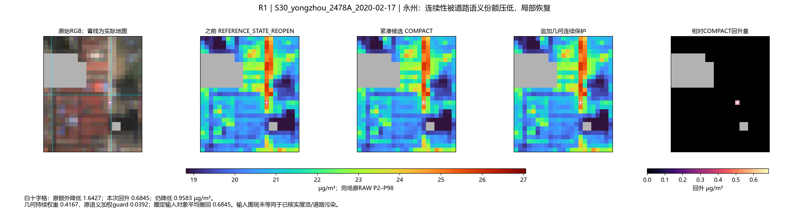
S06_jinan_1300A_2021-06-18：十字格 COMPACT 新增降低 0.9304，回升 0.6978，剩余降低 0.2326 µg/m³。
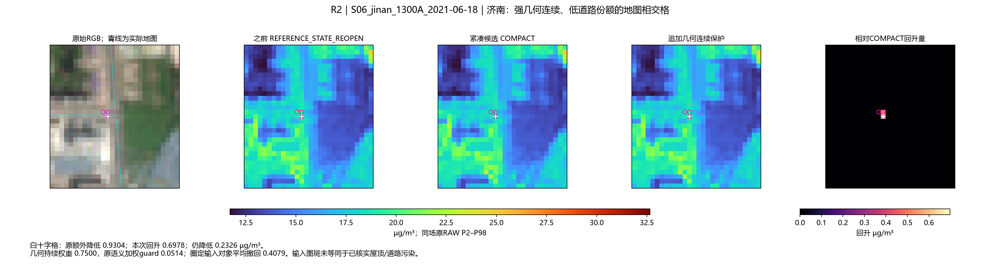
S16_zhoukou_2068A_2021-05-24：十字格 COMPACT 新增降低 1.2379，回升 0.0000，剩余降低 1.2379 µg/m³。
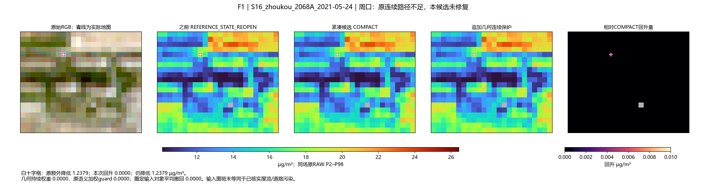
S24_jining_1653A_2021-05-24：十字格 COMPACT 新增降低 0.1943，回升 0.0000，剩余降低 0.1943 µg/m³。
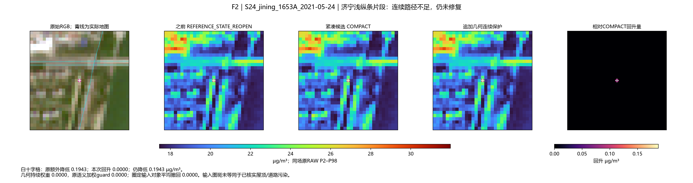
S03_daqing_1793A_2021-06-17：十字格 COMPACT 新增降低 1.9580，回升 1.3053，剩余降低 0.6527 µg/m³。
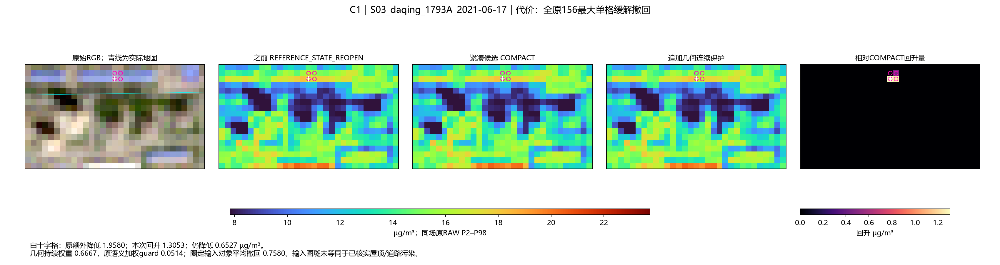
S03_daqing_1793A_2021-05-21：十字格 COMPACT 新增降低 0.8783，回升 0.8783，剩余降低 0.0000 µg/m³。
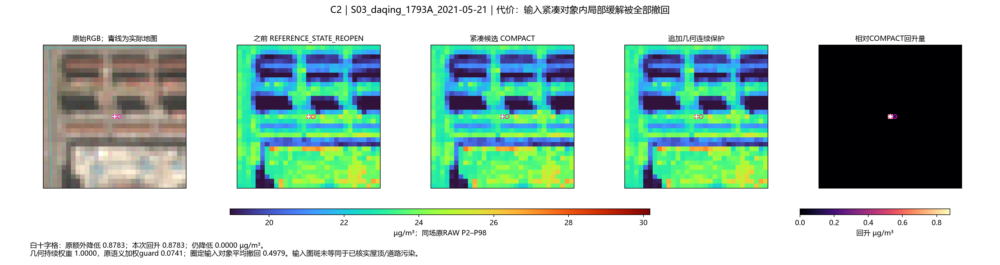
WINDOW_A_2022-10-06：十字格 COMPACT 新增降低 2.2141，回升 1.1071，剩余降低 1.1071 µg/m³。
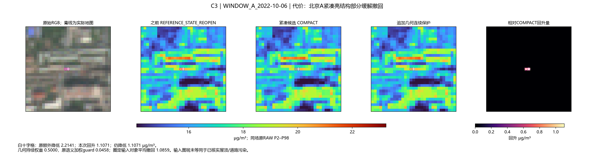
WINDOW_B_2022-10-06：十字格 COMPACT 新增降低 3.0238，回升 0.2520，剩余降低 2.7718 µg/m³。
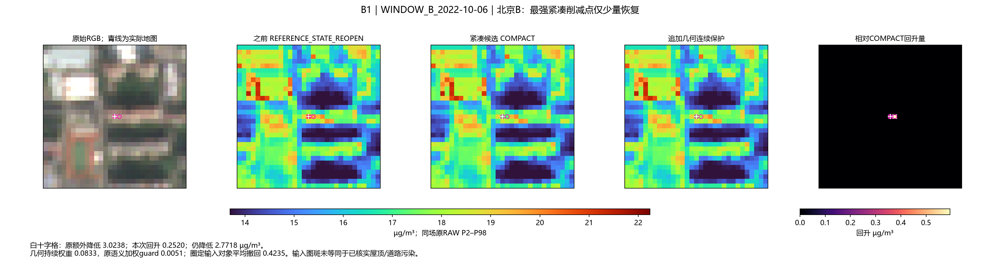
EVENT_S03_daqing_1793A_2021-03-19：十字格 COMPACT 新增降低 0.8991，回升 0.8542，剩余降低 0.0450 µg/m³。
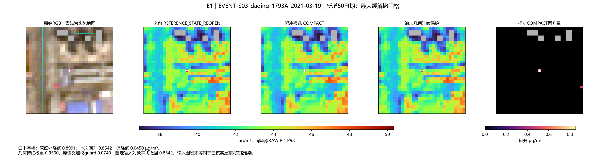
S20_daqing_1791A_2020-09-15：十字格 COMPACT 新增降低 0.6126，回升 0.2042，剩余降低 0.4084 µg/m³。
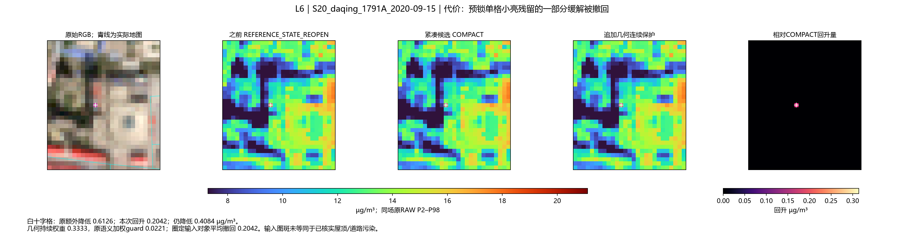
S10_nanyang_2406A_2021-09-14：十字格 COMPACT 新增降低 0.9263，回升 0.3088，剩余降低 0.6175 µg/m³。
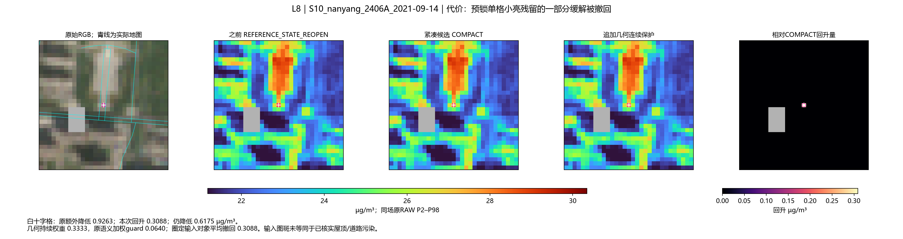
虚线为目标标量减0.025；一旦遇缺测或低于阈值，该侧持续链即终止。保持原定义，没有放宽阈值。
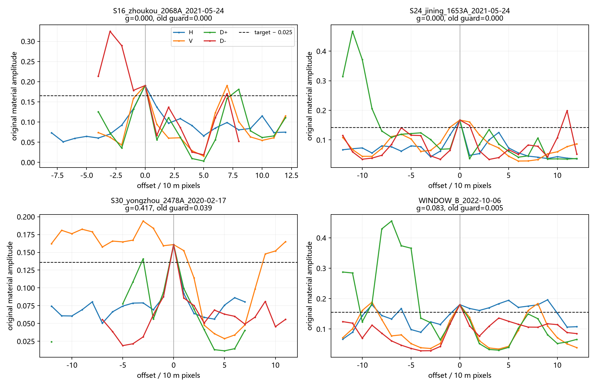